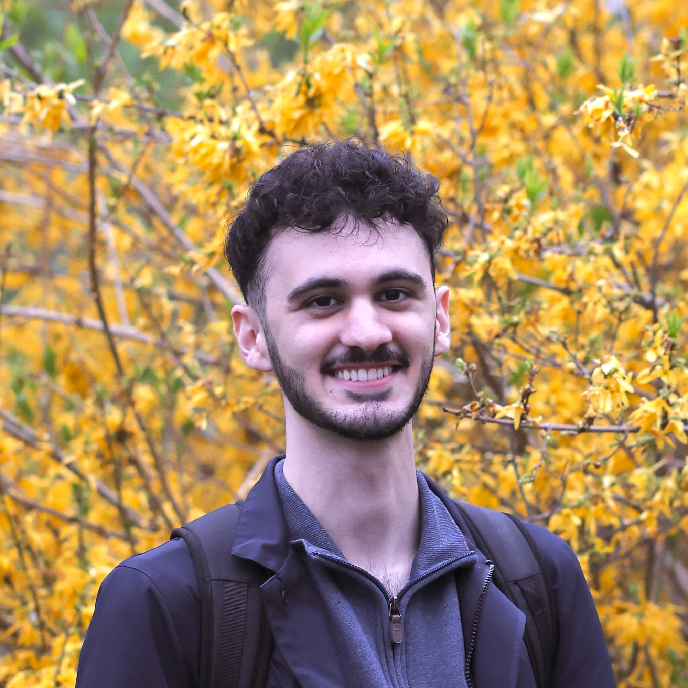
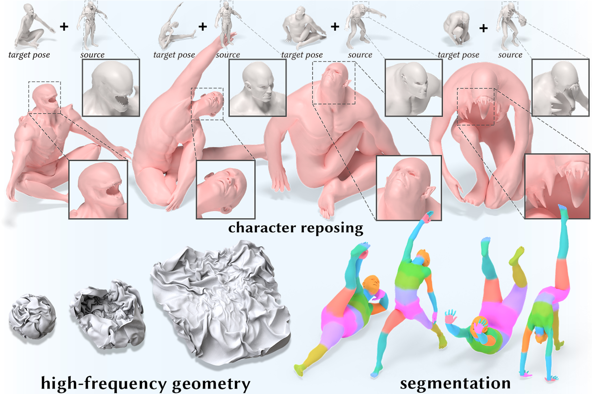

|
I am a rising fifth year Computer Science PhD student at Brown University, where I am advised by Professor Daniel Ritchie. My work is supported by the NSF Graduate Research Fellowship Program. I received my BS in computer science from The University of Texas at Austin in 2021, where I did research with Professor Chandrajit Bajaj. My research interests lie at the intersection of deep learning and computer graphics. In my free time I enjoy creating 3D art, cooking, and playing chess. |
 |
|
|
|
I am broadly interested in the interplay between geometry and deep learning:
1) Deep learning for geometry:
My work focuses on neural methods for shape analysis and deformation. I'm actively pursuing two projects in this space; i) a new architecture for learning on surfaces, and ii) a shape descriptor that is robust to degenerate, multi-component geometry.
Using differential geometry to understand and control neural networks is particularly exciting. For example, augmenting inference using geometric ideas (e.g. as-smooth-as-possible latent interpolation), or understanding the geometry of high-dimensional feature spaces and how to exploit it for "editing" pretrained models.
|
|  |
Arman Maesumi, Tanish Makadia, Thibault Groueix, Vladimir G. Kim, Daniel Ritchie, Noam Aigerman
A new neural architecture for learning on surfaces that overcomes several key deficiencies in existing methods. We demonstrate its ability to learn deformations of detailed, high-resolution meshes, as well as semantic segmentation. |
|
Arman Maesumi, Dylan Hu, Krishi Saripalli, Vladimir G. Kim, Matthew Fisher, Sören Pirk, Daniel Ritchie
A data augmentation strategy that enables diffusion models to smoothly interpolate between disjoint data modes. We train a diffusion model to blend multiple types of procedural noise patterns, even in the absence of "in-between" training data. |
|
|
Arman Maesumi, Paul Guerrero, Vladimir G. Kim, Matthew Fisher, Siddhartha Chaudhuri, Noam Aigerman, Daniel Ritchie
What is the smoothest subspace that spans a set of points in latent space? We optimize smooth parametrizations of such subspaces in 3D generative models and use them to explore continuous variations of meshes. |
|
|
Arman Maesumi The College Mathematics Journal, 2019 [ pdf (1mb) / journal / bibtex ] The probability density function and moments (OEIS A279055) of the area of stochastically generated inscribed geometry are derived. Preliminary findings were presented at TUMC 2017. |
|
In my free time, I enjoy creating 3D renderings and physical simulations using various software. More can be found here. The programs and tools that I use include: Blender, Cinema 4D, RealFlow, Vray, Octane, Arnold, Krakatoa, and more. |

| |